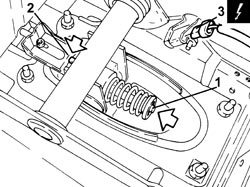
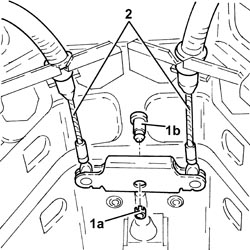
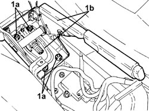
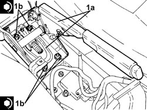

3380A10 HANDBRAKE LEVER - R+R
- Path
- Procedures > 33 BRAKES > 3380 HANDBRAKE > 3380A HANDBRAKE CONTROL AND LINKAGE > 3380A10 HANDBRAKE LEVER - R+R
- Kind
- repair procedure (removal / refitting; the operation number is the code)
- Applies to
- all engines; all production periods
- Interactive page
- https://sloeber94.github.io/elrnDB-fCrm/en/#/194000518
Applies to: all engines; all production periods
 Removing
Removing
 Refitting
Refitting- Position the vehicle on a lift.
Op. 1076B30 FRONT EXHAUST SILENCER - R + R
Op. 1076B20 REAR EXHAUST SILENCER - R + R
Op. 1076A42 FRONT EXHAUST SILENCER FRONT HEAT SHILED R R
Op. 7040A65 CONSOLE SIDE CLOSING (ONE) - R.R.
(Both).
Op. 5010C32 AIR VENT ON TUNNEL COVER FOR REAR SEATS - R.R.
Op. 7040L28 TUNNEL SWITCH PANEL - R R
Op. 5520A10 IGNITION SWITCH ASSEMBLY - R+R
Op. 7040L20 TUNNEL COVER - R.R
- Lock the handbrake lever self-adjustment system proceeding as follows.
- Place the handbrake lever in the rest position.
1. Press the spring for the rod to loosen the cable tension.
2. Apply sufficient force to lock the self-adjustment system attaching the retaining clip to the teeth.
3. Disconnect the electrical connection from the handbrake switch.
Description | Connector | |
|---|---|---|
3 | Handbrake applied switch |

Applies to: all engines; all production periods
1. Remove the ring (1a) and extract the pin (1b) connecting the handbrake cables to the handbrake control lever.
2. Release the handbrake control cables from the fastening on the bodyshell.

Applies to: all engines; all production periods
1. Undo the nuts (1a) and remove the handbrake lever (1b).

Applies to: all engines; all production periods
Refitting
Removing1. Place the handbrake lever (1a) in its housing and secure it by tightening the nuts (1b) to the recommended torque.
Component | Fastening | dia | Value (daNm) | Validity |
|---|---|---|---|---|
Handbrake lever | Nut | M6 | (bodyshell side) 0.8 - 1.2 |

Applies to: all engines; all production periods
- Secure the handbrake control cables to the fastening on the bodyshell.
- Place the connecting pin in its housing and secure it using a new ring.
- Connect the electrical connection to the handbrake switch.
- Pull the hanbrake lever manually into the end of travel position to release the retaining spring.
- Place the lever in the rest position.
- Operate the handbrake lever placing it in the end of travel position four times to fully stabilize the self-adjustment system.
Op. 7040L20 TUNNEL COVER - R.R
Op. 5520A10 IGNITION SWITCH ASSEMBLY - R+R
Op. 7040L28 TUNNEL SWITCH PANEL - R R
Op. 5010C32 AIR VENT ON TUNNEL COVER FOR REAR SEATS - R.R.
Op. 7040A65 CONSOLE SIDE CLOSING (ONE) - R.R.
(Both).
Op. 1076A42 FRONT EXHAUST SILENCER FRONT HEAT SHILED R R
Op. 1076B20 REAR EXHAUST SILENCER - R + R
Op. 1076B30 FRONT EXHAUST SILENCER - R + R
- Remove the vehicle from the lift.
Topics linked from this page (9)
- 1076A42 FRONT EXHAUST SILENCER FRONT HEAT SHILED R R
- 1076B20 REAR EXHAUST SILENCER - R + R
- 1076B30 FRONT EXHAUST SILENCER - R + R
- 5010C32 AIR VENT ON TUNNEL COVER FOR REAR SEATS - R.R.
- 5520A10 IGNITION SWITCH ASSEMBLY - R+R
- 7040A65 CONSOLE SIDE CLOSING (ONE) - R.R.
- 7040L20 TUNNEL COVER - R.R
- 7040L28 TUNNEL SWITCH PANEL - R R
- I040 PARKING BRAKE ENGAGED SWITCH